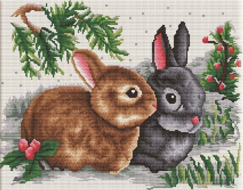

ВЫШИВКА КРЕСТОМ
Вышивка крестом — вид рукоделия. Это способ вышивания рисунка на канве с помощью иглы и цветных нитей мулине или других нитей для вышивания, в том числе шерстяных, используется техника в полный крест или полукрест.
Вышивка крестом — один из видов рукоделия, искусство которого уходит корнями в эпоху первобытной культуры, когда люди использовали стежки каменными иглами при шитье одежд из шкур животных. Изначально материалами для вышивки были кожа животных, жилы, волокна конопли или шерсти.
Назад
